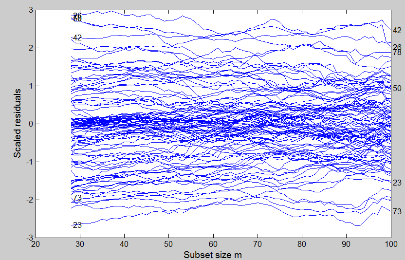
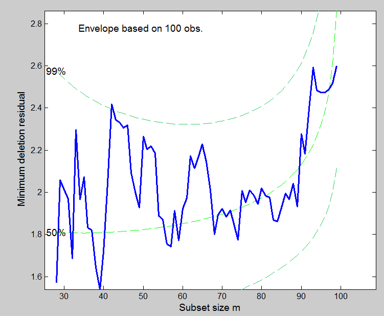
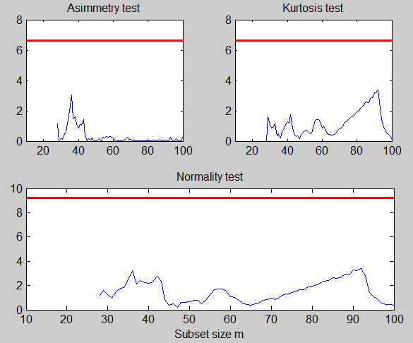
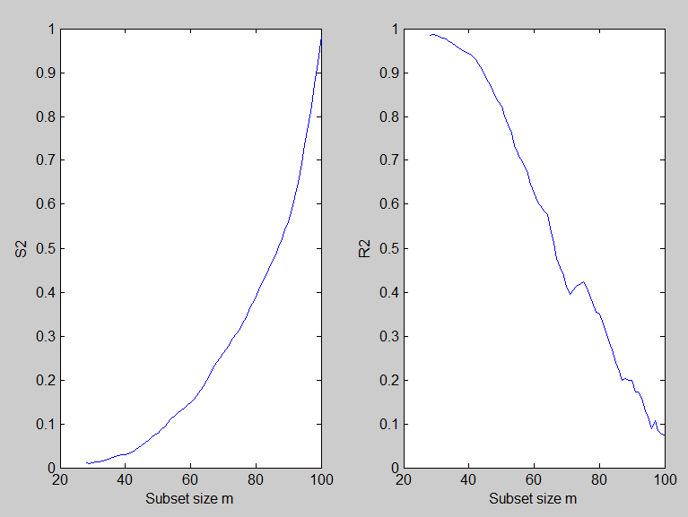
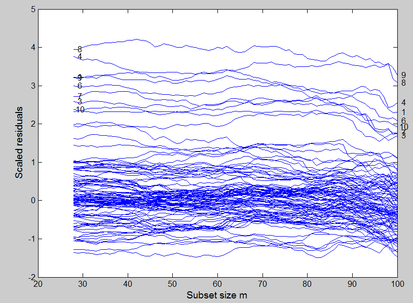
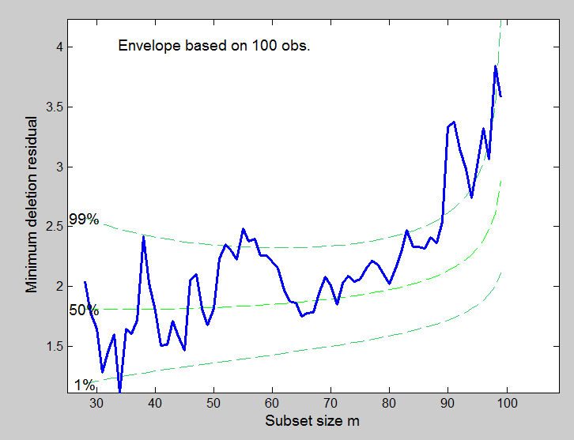
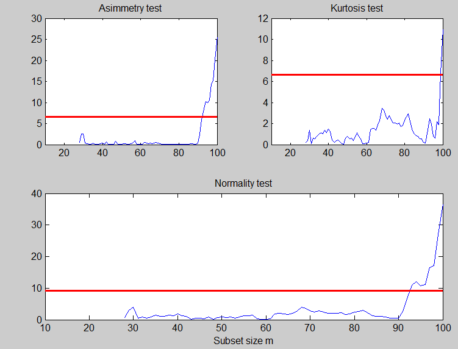

| Flexible Statistics Data Analysis Toolbox™ |
|
| Provide feedback on FSDA toolbox |
Forward search in linear regression (FSR) with exploratory data analysis (eda) purposes
[out] = FSReda(y,X,bsb)
[out] = FSReda(y,X,bsb,param1,val1,param2,val2,...)
[out] = FSReda(y,X,bsb) enables to monitor the evolution of residuals, parameters estimates and inferences as the subset size increases. In other words, this function stores the required quantities to present the results as “forward plots” which show the evolution of the quantities of interest as a function of subset size. Therefore, unlike other robust approaches, the forward search is a dynamic process that produces a sequence of estimates and related plots.
Cook distance, and the other diagnostic quantities, measure the effect of deletion of a single observation and so may be liable to masking when several outliers are present. The forward search overcomes this masking, with abrupt changes in parameter estimates indicating influential observations, which can be detected through the monitoring of a “forward version” of the Cook statistic .
y is a vector of length n containing the response values, while X is the n-by-p-1 matrix which contains (in the columns) the values of p-1 predictive terms. bsb is a vector containing the list of the units forming the initial subset. If bsb=0 (default) then the procedure starts with p units randomly chosen else if bsb is not 0 the search will start with m0=length(bsb)
[out] = FSReda(y,X,bsb) returns the following information
RES − n-by-(n-init+1) matrix containing the monitoring of scaled
residuals
1st row = residual for first unit
......
nth row =
residual for nth unit.
LEV − n-by-(n-init+1) matrix containing the monitoring of leverage
1st row = leverage for first unit
......
nth row =
leverage for nth unit.
BB − n-by-(n-init+1) matrix containing the information about the units belonging
to the subset at each step of the forward search.
1st col = indexes of the units forming subset in the initial step
...
last column = units forming subset in the final step (all units)
mdr −n-by-3 matrix which contains the monitoring of minimum
deletion residual or (m+1)ordered residual at each step of
the forward search.
1st col = fwd search index (from init to n-1)
2nd col = minimum deletion residual
3rd col = (m+1)-ordered residual
msr − n-by-3 = matrix which contains the monitoring of
maximum studentized residual or m-th ordered residual
1st col = fwd search index (from init to n)
2nd col = maximum studentized residual
3rd col = (m)-ordered studentized residual
nor − n-by-4 matrix containing the monitoring of
normality test in each step of the forward search
1st col = fwd search index (from init to n)
2nd col = Asimmetry test
3rd col = Kurtosis test
4th col = Normality test
Bols − (n-init+1)-by-p matrix containing the monitoring of estimated beta coefficients in each step of the forward search
S2 − n-by-3 matrix containing the monitoring of S2 or R2
in each step of the forward search
1st col = fwd search index (from init to n)
2nd col = monitoring of S2
3rd col = monitoring of R2
Coo − n-by-3 matrix containing the monitoring of Cook or
modified Cook distance in each step of the forward search
1st col = fwd search index (from init to n)
2nd col = monitoring of Cook distance
3rd col = monitoring of modified Cook distance
Tols − (n-init+1)-by-(p+1) matrix containing the monitoring of estimated t-statistics (as specified in option input 'tstat' in each step of the forward search
Un − n-by-11 matrix which contains the unit(s) included
in the subset at each step of the fwd search.
REMARK: in every step
the new subset is compared with the old subset. Un contains the unit(s)
present in the new subset but not in the old one.
Un(1,2) for example
contains the unit included in step init+1.
Un(end,2) contains the units
included in the final step of the search.
y − A vector with n elements that contains the response variable which has been used
X − Data matrix of explanatory variables which has been used (it also contains the column of ones if input option intercept was missing or equal to 1)
[out] = FSReda(y,X,bsb,param1,val1,param2,val2,...) specifies one or more of the name/value pairs described in the following table.
| Parameter | Value |
|---|---|
| 'intercept' |
If 1, a model with constant term will be fitted (default) else no constant term will be included. |
| 'init' |
scalar, which specifies the point where to initialize the search
and start monitoring required diagnostics. Notice that if bsb
is supplied init>=length(bsb). if init is not specified it will be set equal to
|
| 'nocheck' |
Scalar. If nocheck is equal to 1 no check is performed on matrix y and matrix X. Notice that y and X are left unchanged. In other words the additional column of ones for the intercept is not added. As default nocheck=0. The controls on h, alpha and nsamp still remain |
| 'tstat' |
Character string which specifies the kind of t-statistics which have to be monitored. tstat = 'trad' implies monitoring of traditional t statistics (out.Tols). In this case the estimate of σ2 at step m is based on s2m (notice that s2m<<σ2 when m/n is small). tstat = 'resc' (default) implies monitoring of rescaled t statistics In this scale the estimate of σ2 at step m is based on s2m / var_truncnorm(m/n) where var_truncnorm(m/n) is the variance of the truncated normal distribution. |
% Generate an artificial dataset
n=100;
p=8;
state=1;
randn('state', state);
X=randn(n,p);
y=randn(n,1);
% Run the forward search with Exploratory Data Analysis purposes
% LMS using 10000 subsamples
[outLXS]=LXS(y,X,'nsamp',10000);
% Forward Search
[out]=FSReda(y,X,outLXS.bs);
Typical patterns of forward plots with uncontaminated data.
The monitoring residuals plot when no outlier is present and there is no leverage unit, should show no apparent pattern in the residuals along the search.
resfwdplot(out);
The minimum deletion residual (apart from some isolated exceedances to the threshold in the central part of the search) should be contained in the 99% confidence bands
mdrplot(out);
The normality test should be inside the asymptotic confidence bands based on the chi^2 distribution
figure;
lwdenv=2;
xlimx=[10 100];
subplot(2,2,1);
plot(out.nor(:,1),out.nor(:,2));
title('Asimmetry test');
xlim(xlimx);
quant=chi2inv(0.99,1);
v=axis;
line([v(1),v(2)],[quant,quant],'color','r','LineWidth',lwdenv);
subplot(2,2,2)
plot(out.nor(:,1),out.nor(:,3))
title('Kurtosis test');
xlim(xlimx);
v=axis;
line([v(1),v(2)],[quant,quant],'color','r','LineWidth',lwdenv);
subplot(2,2,3:4)
plot(out.nor(:,1),out.nor(:,4));
xlim(xlimx);
quant=chi2inv(0.99,2);
v=axis;
line([v(1),v(2)],[quant,quant],'color','r','LineWidth',lwdenv);
title('Normality test');
xlabel('Subset size m');

The R2 and the S2 should respectively show an increasing and decreasing pattern without significant jumps.
figure;
subplot(1,2,1)
plot(out.S2(:,1),out.S2(:,2))
xlabel('Subset size m');
ylabel('S2');
subplot(1,2,2)
plot(out.S2(:,1),out.S2(:,3))
xlabel('Subset size m');
ylabel('R2');

Now, let us see what happens to the previous forward plots when some outliers are present. The contamination is associated with the first 10 units by adding to all dimensions a level shift of 5.
y(1:10)=y(1:10)+5;Typical pattern of forward plots with a cluster of contaminated data.
The monitoring residuals plot shows a set of positive residuals which starting from the central part of the search tend to have a residual much larger than that of the other units.
 The minimum deletion residual from m=90 starts going above the 99% threshold.
The curve which monitors the normality test shows a sudden big increase with the outliers are included
| Provide feedback on FSDA toolbox |
|
|
fsrcp.html | fsrenvmdr.html |
|